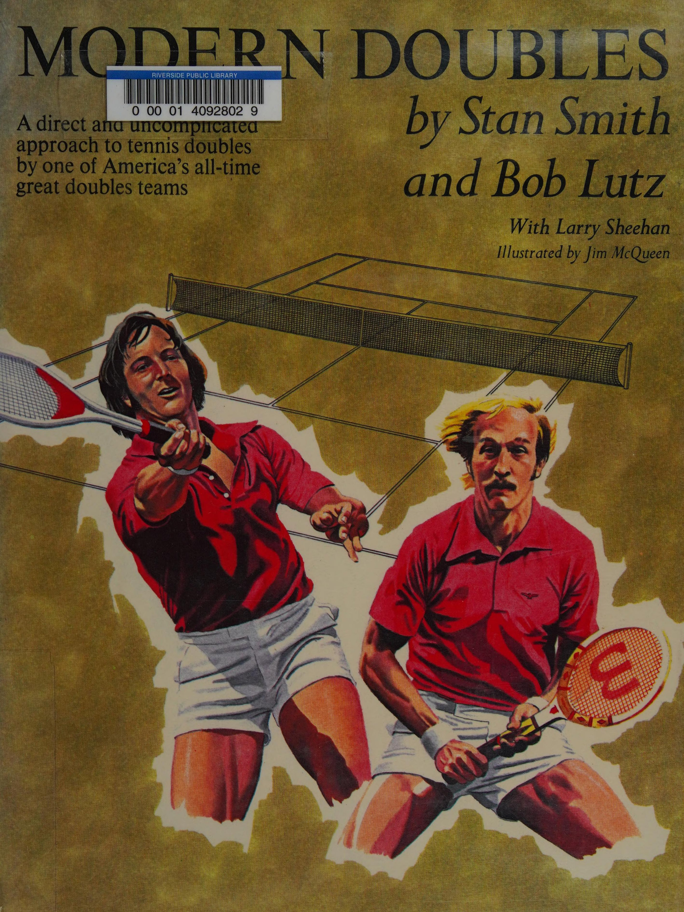
Tác phẩm cẩm nang chiến thuật kinh điển của hai huyền thoại vĩ đại Stan Smith & Bob Lutz
Lời Mở Đầu: Bản Sắc Của Lối Chơi Đánh Đôi Hiện Đại
Stan Smith & Bob Lutz — Huyền Thoại 5 Lần Vô Địch Grand Slam Đôi Nam
Sự Ra Đời Của Một Triết Lý Đánh Đôi Đỉnh Cao
Quần vợt đánh đôi hiện đại không đơn thuần là việc xếp bốn tay vợt đứng trên cùng một mặt sân để thi đấu. Đó là một môn khoa học về hình học không gian, sự luân chuyển vị trí với tốc độ phần trăm giây và sự thấu hiểu tuyệt đối giữa hai cá thể để trở thành một thực thể chiến đấu thống nhất.
Khi chúng tôi bắt đầu thi đấu cùng nhau tại Đại học Nam California (USC) và sau đó đại diện cho Đội tuyển Davis Cup Hoa Kỳ, chúng tôi nhanh chóng nhận ra rằng những tay vợt đơn cự phách khi bước sang sân đôi thường thất bại thảm hại nếu họ cố gắng mang nguyên xi tư duy đánh đơn vào sân đôi. Đánh đôi đòi hỏi những kỹ năng hoàn toàn khác biệt: Cú giao bóng không cần phải bạt thật mạnh mà phải có độ xoáy cuộn để tạo thời gian lao lên lưới; cú trả giao bóng không nhắm tới điểm winner dọc dây liều lĩnh mà phải cắm chìm vào chân đối thủ; và trên hết, khả năng làm chủ mặt lưới là yếu tố phân định thắng bại trong hơn 90% số điểm số.
Cuốn sách này được chúng tôi đúc kết sau hàng ngàn trận đấu đỉnh cao tại Wimbledon, US Open và Davis Cup. Mục tiêu của chúng tôi là cung cấp cho bạn đọc một hệ thống chiến thuật thực chiến rõ ràng, dễ áp dụng và hiệu quả ngay lập tức cho các trận đấu phong trào cũng như giải đấu nâng cao.
Chương 1: Tại Sao Đánh Đôi Đòi Hỏi Cách Tiếp Cận Đặc Biệt?
Why Doubles Demands a Special Approach
Ảo Tưởng Về Trận Đánh Đơn Thu Nhỏ
Sai lầm phổ biến nhất của những người chơi phong trào là tiếp cận trận đánh đôi như một phiên bản đánh đơn đông đúc hơn. Họ đứng bám vạch cuối sân, cố gắng tung ra những cú đánh bạt bóng nặng từ cuối sân và chỉ bước lên lưới khi bị đối phương bỏ nhỏ ép buộc.
Thực tế hoàn toàn trái ngược: Trong đánh đơn, bạn có tới 27 feet chiều rộng sân để điều bóng và đối thủ thường đứng sau vạch cuối sân. Nhưng trong đánh đôi, mặc dù sân được nới rộng thêm 4.5 feet mỗi bên (tổng cộng 36 feet), sự hiện diện của hai tay vợt đối phương — trong đó có một người đứng rình rập ngay sát mép lưới — đã biến không gian mở trở thành những khe hẹp vô cùng chật chội. Bất kỳ đường bóng bạt thiếu chiều sâu hoặc bay cao hơn mép lưới quá 30 cm đều sẽ bị tay vợt đứng lưới đối phương bắt bài và đập dứt điểm ngay lập tức.
Ba Sự Khác Biệt Mang Tính Bản Lề
Để bắt đầu hành trình trở thành một tay vợt đánh đôi đẳng cấp, bạn phải khắc ghi ba sự khác biệt nền tảng:
1. Tâm lý tập thể thay vì chủ nghĩa cá nhân: Trong đánh đơn, bạn hoàn toàn chịu trách nhiệm về mọi cú đánh hỏng và tự mình gặm nhấm nỗi thất vọng. Trong đánh đôi, mọi cảm xúc tiêu cực của bạn sẽ lập tức truyền sang người bạn cặp và làm tê liệt sự tự tin của toàn đội. Bạn phải học cách nâng đỡ người đồng đội sau mỗi pha bóng hỏng.
2. Không gian cận chiến và tốc độ phản xạ: Phần lớn các pha bóng quyết định trong đánh đôi diễn ra ở cự ly dưới 6 mét quanh mặt lưới. Thời gian phản xạ của bạn rút ngắn từ 1 giây (ở cuối sân) xuống chỉ còn 0.3 đến 0.4 giây. Bạn không có thời gian để mở vợt vòng cung lớn; mọi động tác volley đều phải gọn gàng, súc tích và dứt khoát.
3. Độ chuẩn xác góc đánh quan trọng hơn sức mạnh cơ bắp: Một cú giao bóng sấm sét bay thẳng vào tầm tay của người đỡ bóng đôi khi không nguy hiểm bằng một quả giao bóng xoáy cúp vào góc chữ T hoặc cắm sườn buộc đối thủ phải giật mình đánh bóng với.
Chương 2: Bốn Nguyên Lý Cốt Lõi Của Đánh Đôi Hiện Đại
Principles of Modern Doubles Play
Nguyên Lý 1: Đánh Bóng Sớm & Đón Đầu Đường Bóng (Hit the Ball Early)
Trong đánh đôi, thời gian là thứ tài sản quý giá nhất. Người nào giành được quyền chủ động về thời gian sẽ là người kiểm soát cuộc chơi. Đánh bóng sớm đồng nghĩa với việc bạn chủ động bước chân đón bóng ở điểm cao nhất sau khi bóng nảy hoặc cắt bóng ngay trên không (volley) thay vì lùi lại chờ bóng rơi xuống ngang thắt lưng.
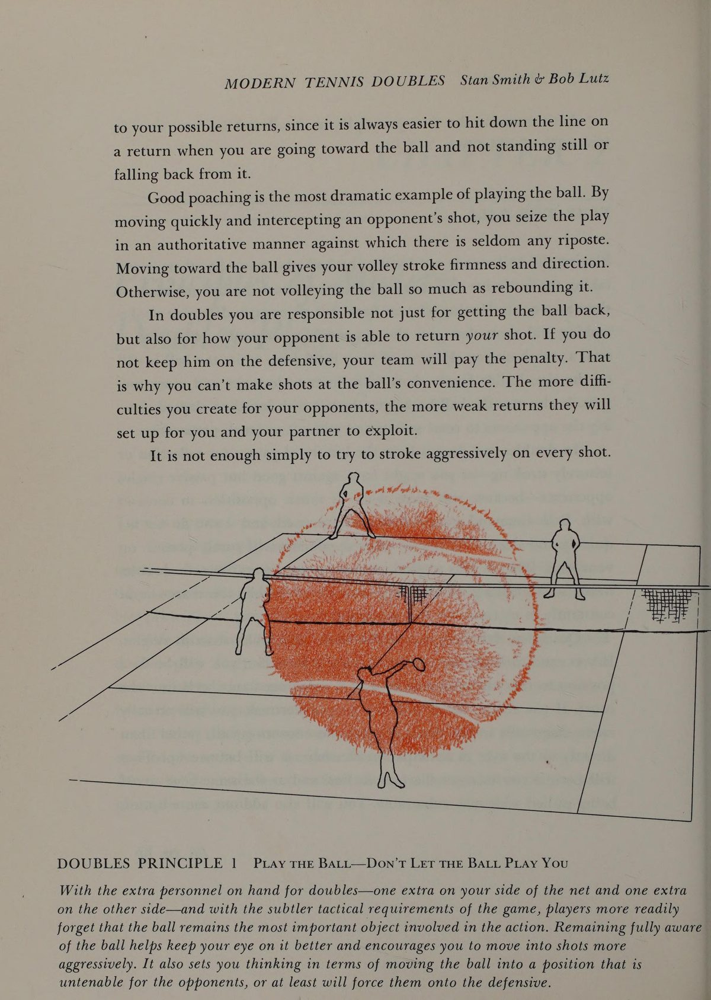
Sơ đồ 2.1: Nguyên lý Đánh Bóng Sớm (Hit the Ball Early) — Tước đoạt thời gian chuẩn bị của đối thủ bằng cách rút ngắn cự ly tiếp xúc bóng.
Nguyên Lý 2: Thống Trị Mặt Lưới (Control the Net)
Thống kê qua hàng vạn trận đấu chuyên nghiệp chứng minh: Cặp đôi nào chiếm lĩnh được vị trí mặt lưới trước và giữ vững cự ly sẽ giành chiến thắng trong hơn 85% các pha bóng giằng co. Khi cả hai bạn cùng đứng trên lưới, bạn tạo thành một bức tường chắn khép kín toàn bộ góc đánh của đối thủ.
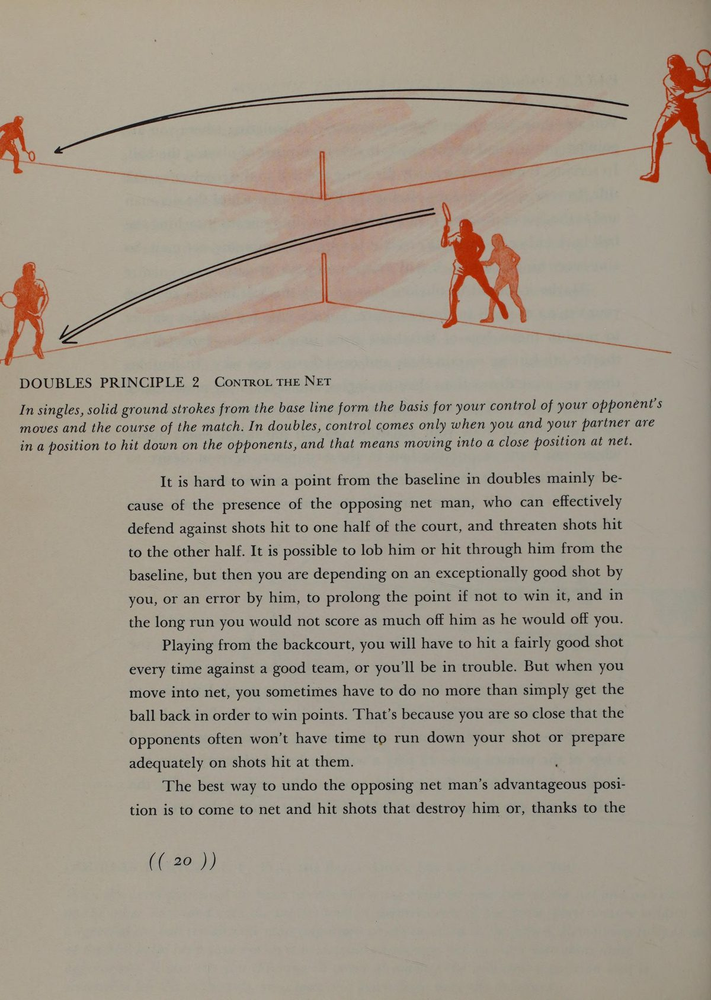
Sơ đồ 2.2: Nguyên lý Thống Trị Mặt Lưới (Control the Net) — Thiết lập cặp đôi song hành trên lưới để áp đặt áp lực tâm lý tối đa.
Nguyên Lý 3: Đánh Bóng Chúc Xuống Dưới Chân Đối Thủ (Hit Down at Your Opponents)
Quy luật bất biến của môn quần vợt: Người nào đánh bóng chúc xuống sẽ nắm thế tấn công; người nào buộc phải vung vợt đánh bóng bổng lên từ dưới mép lưới sẽ rơi vào thế phòng ngự bị động. Hãy luôn nhắm đường bóng rơi vào mắt cá chân của đối phương đang lao lên.
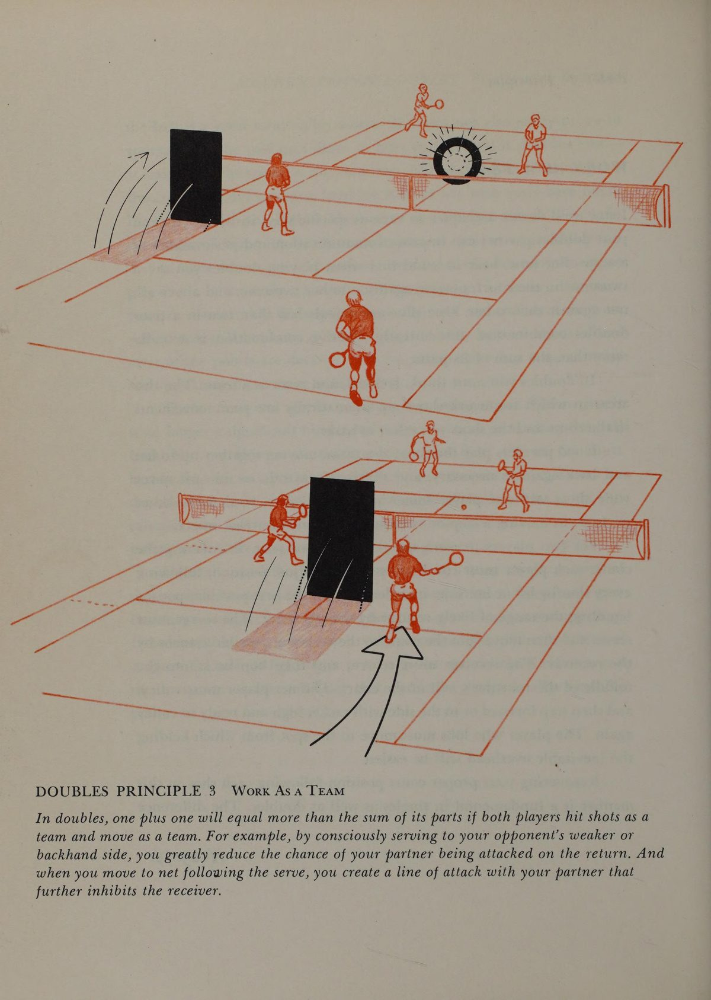
Sơ đồ 2.3: Nguyên lý Đánh Bóng Chúc Xuống (Hit Down at Your Opponents) — Ép đối thủ phải đánh quả volley nâng bóng bổng qua mép lưới.
Nguyên Lý 4: Duy Trì Cân Bằng Đội Hình & Bọc Lót Đồng Bộ (Maintain Team Balance)
Hai tay vợt trên sân phải di chuyển như hai đầu của một thanh đòn cứng hoặc được nối liền bằng một sợi dây chun co giãn 3 mét. Khi một người bị kéo dạt ra ngoài biên để cứu bóng, người kia phải lập tức trượt ngang vào trung lộ để lấp kín lỗ hổng chết người ở giữa sân.
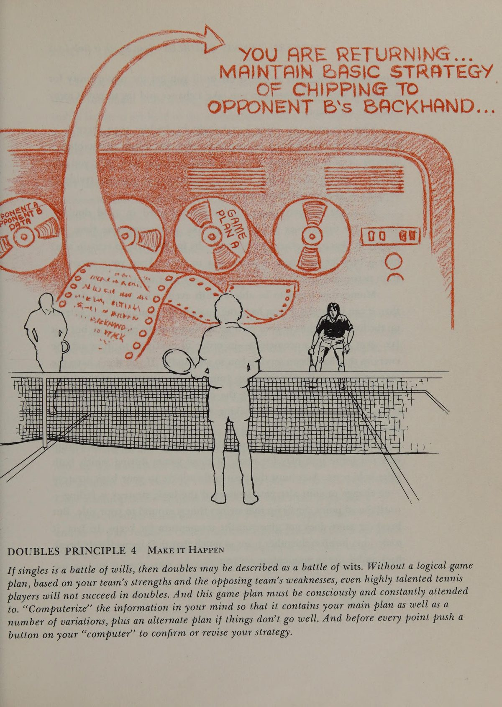
Sơ đồ 2.4: Nguyên lý Cân Bằng Đội Hình (Maintain Team Balance) — Di chuyển đồng bộ tịnh tiến ngăn chặn đường bóng xuyên phá trung lộ.
Chương 3: Tám Vai Trò Luân Chuyển Trên Sân Đôi
The Shifting Doubles Roles and How to Play Them
Vai Trò 1 & 2: Người Giao Bóng — Cú Volley 1 & Cú Volley 2
Sau khi tung bóng giao bóng, người giao bóng phải lập tức hoàn tất bước đà lao vào sân. Cú volley đầu tiên (First Volley) thường được thực hiện ngay trước vạch giao bóng (khu vực giữa sân) — mục tiêu là đưa quả bóng đi sâu và chìm vào góc yếu của đối phương. Sau cú đánh này, người giao bóng bước tiếp hai bước lớn áp sát mép lưới để thực hiện cú volley thứ hai (Second Volley) dứt điểm điểm số.
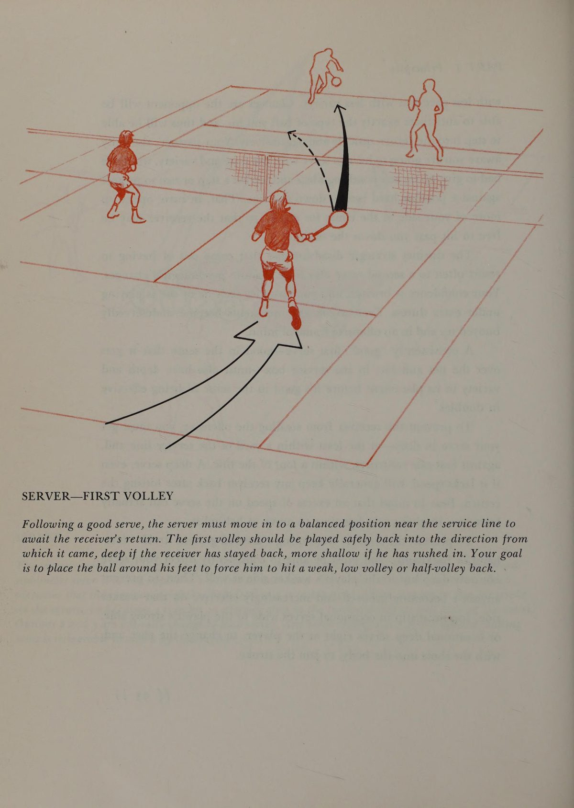
Sơ đồ 3.1: Người Giao Bóng — Cú Volley Đầu Tiên (First Volley) tại khu vực vạch giao bóng.
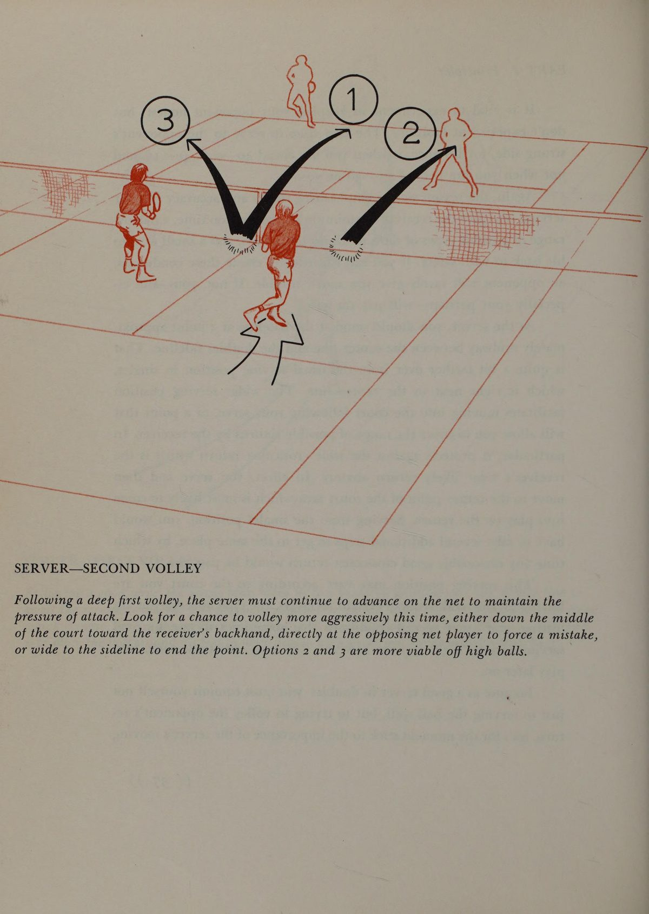
Sơ đồ 3.2: Người Giao Bóng — Cú Volley Thứ Hai (Second Volley) áp sát mép lưới kết liễu điểm số.
Vai Trò 3 & 4: Bạn Cặp Người Giao Bóng — Tấn Công & Phòng Thủ
Bạn cặp của người giao bóng khởi đầu trận đấu ở vị trí thuận lợi nhất: Đứng sẵn trên lưới ở ô giao bóng đối diện. Khi đối phương trả giao bóng yếu ớt hoặc nổi bồng bềnh, bạn cặp phải lập tức di chuyển chéo góc (poach) để đập dứt điểm. Tuy nhiên, nếu quả trả giao bóng đi hiểm vào góc chân người giao bóng, bạn cặp phải nhận thức được nguy cơ bị phản công và chuẩn bị tư thế phòng ngự che chắn cú đánh dọc dây.
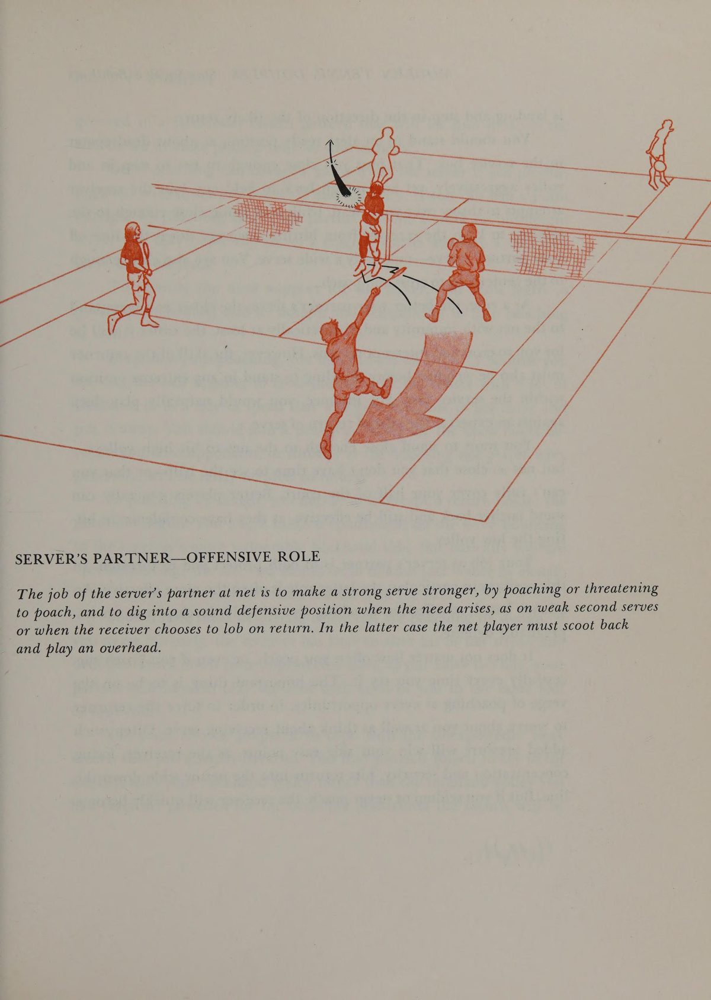
Sơ đồ 3.3: Bạn Cặp Người Giao Bóng — Vai trò Tấn Công: Cắt ngang trung lộ bắt volley dứt điểm.
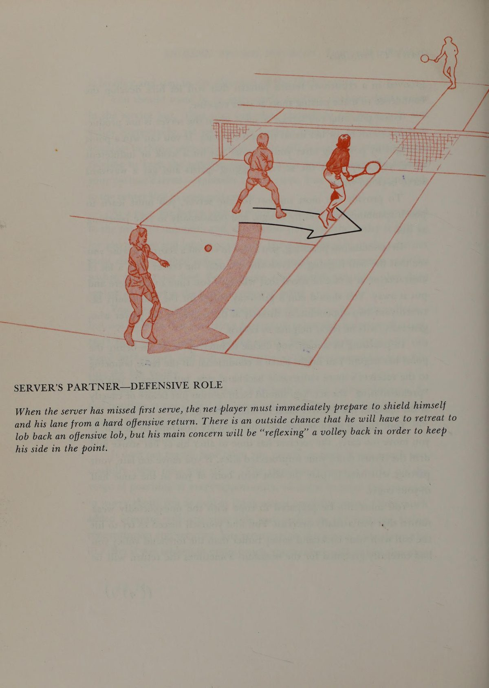
Sơ đồ 3.4: Bạn Cặp Người Giao Bóng — Vai trò Phòng Thủ: Bảo vệ hành lang khi đồng đội bị ép bóng.
Vai Trò 5 & 6: Người Trả Giao Bóng — Hóa Giải & Phản Công
Người trả giao bóng gánh vác trách nhiệm nặng nề nhất trong game đỡ bóng. Mục tiêu hàng đầu không phải là đánh winner mà là đưa bóng qua lưới an toàn và rơi chìm vào chân người giao bóng đang lao lên. Khi đối thủ giao bóng hai yếu, người trả bóng có thể chủ động chuyển sang tư thế tấn công bằng một cú đánh bạt sâu hoặc lốp bóng qua đầu người đứng lưới.
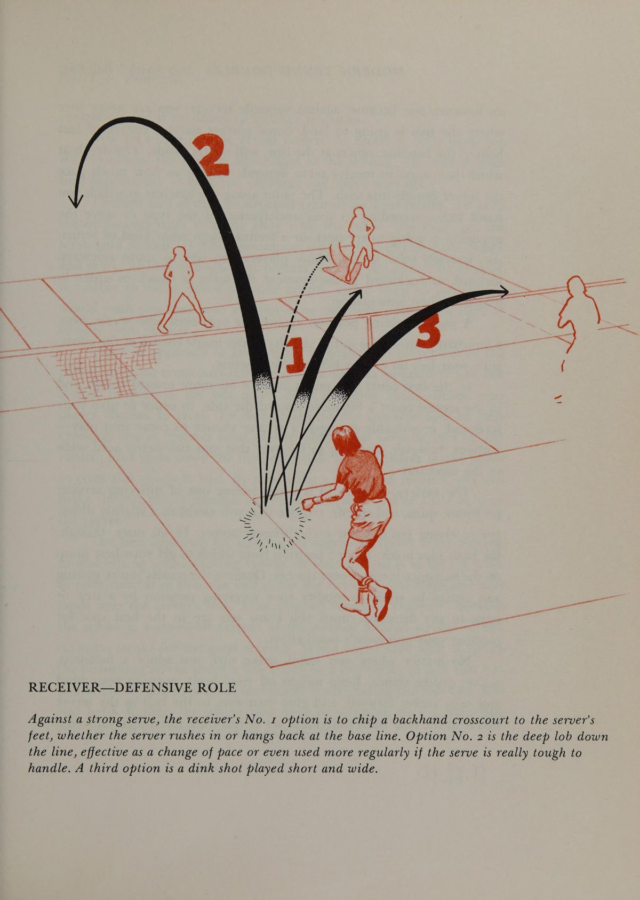
Sơ đồ 3.5: Người Trả Giao Bóng — Vai trò Phòng Thủ: Cắt bóng an toàn chéo sân vào chân đối thủ.
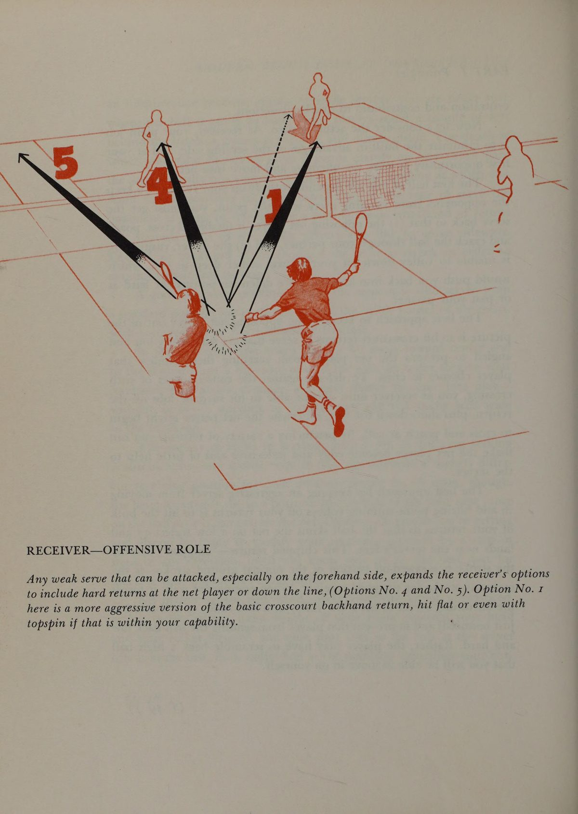
Sơ đồ 3.6: Người Trả Giao Bóng — Vai trò Tấn Công: Dâng cao tấn công bóng hai và dứt điểm.
Vai Trò 7 & 8: Bạn Cặp Người Trả Bóng — Hỗ Trợ & Lên Lưới
Bạn cặp của người trả bóng thường đứng ở vị trí giữa sân gần vạch giao bóng. Nhiệm vụ tối quan trọng là quan sát quả trả bóng của đồng đội: Nếu quả trả bóng hiểm hóc ép đối thủ đánh bóng bổng lên, hãy lập tức lao lên áp sát lưới để dứt điểm; nếu quả trả bóng nổi cao nguy hiểm, hãy lập tức lùi lại một bước và che chắn thân mình chuẩn bị phòng thủ.
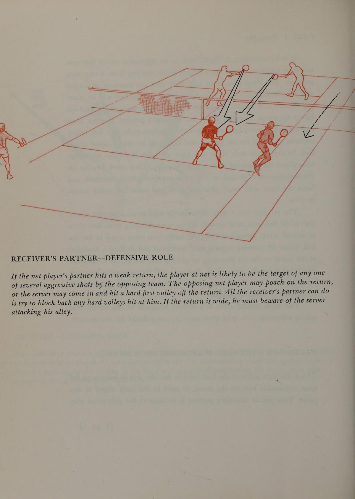
Sơ đồ 3.7: Bạn Cặp Người Trả Bóng — Vai trò Phòng Thủ: Lùi sâu phòng thủ khi đồng đội trả bóng non.
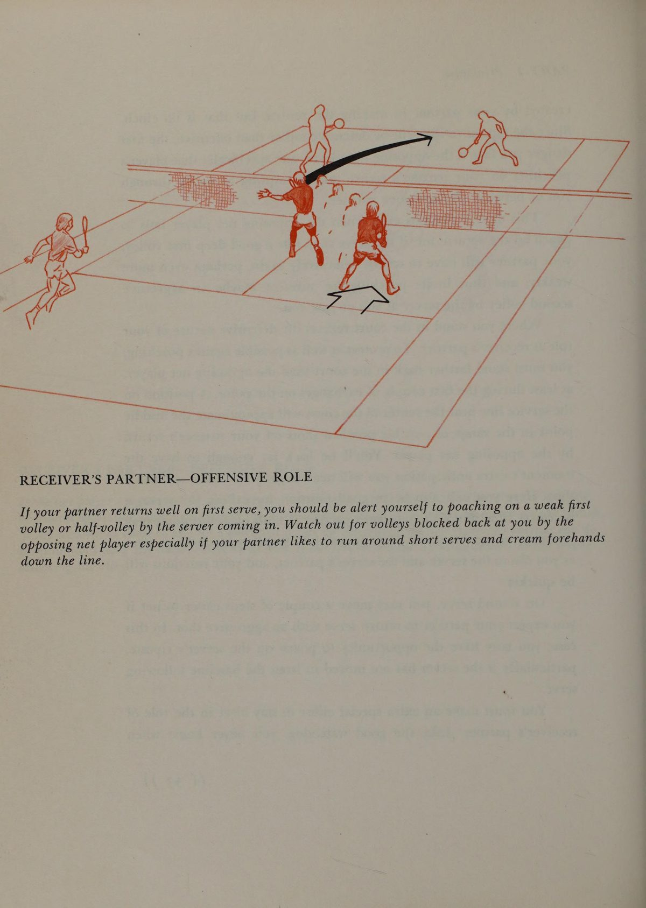
Sơ đồ 3.8: Bạn Cặp Người Trả Bóng — Vai trò Tấn Công: Dâng lên phối hợp cùng đồng đội thiết lập bức tường lưới kép.
Chương 4: Giao Bóng Xoáy Ở Tốc Độ 3/4 Lực
Serve with Spin at Three-Quarter Pace
Nghịch Lý Về Tốc Độ Giao Bóng Trong Đánh Đôi
Trong đánh đơn, một cú giao bóng phẳng (flat serve) với vận tốc 120 dặm/giờ là vũ khí ăn điểm trực tiếp tuyệt hảo. Nhưng trong đánh đôi, nếu bạn tung ra một cú giao bóng phẳng sấm sét và lao lên lưới, bạn đang tự sát về mặt chiến thuật.
Tại sao lại như vậy?
Bởi vì một quả bóng bay quá nhanh sẽ bay sang sân đối phương chỉ trong 0.4 giây. Thời gian đó không đủ để một người có thể chạy được 4 bước từ vạch cuối sân lên đến vị trí thăng bằng trên lưới. Đối phương chỉ cần giơ vợt chặn một đường bóng phản xạ nhanh là quả bóng sẽ bay vụt qua đầu hoặc cắm thẳng vào chân bạn khi bạn vẫn còn đang lơ lửng trong bước chạy đà.
Lời khuyên vàng của Stan Smith và Bob Lutz: Hãy giảm tốc độ giao bóng xuống mức 75% hoặc 80% lực tối đa. Thay thế sức mạnh cơ bắp bằng độ xoáy cuộn (topspin kick) hoặc độ xoáy xoắn ngang (slice). Một quả giao bóng xoáy có quỹ đạo cầu vồng sẽ lưu lại trên không lâu hơn 0.2 đến 0.3 giây — khoảng thời gian vàng ngọc này cho phép bạn ung dung bước 4 bước lớn vào sâu trong sân, hãm đà bằng bước tách chân (split-step) vững chãi và đón đánh quả volley đầu tiên trong tư thế thăng bằng tuyệt đối.
Ba Điểm Rơi Chiến Lược Cho Cú Giao Bóng
Đừng bao giờ giao bóng vào giữa ô giao bóng một cách ngẫu nhiên. Hãy luôn chủ động lựa chọn một trong ba điểm rơi chiến thuật:
1. Điểm rơi góc chữ T (Down the Center): Đây là điểm rơi an toàn và hiệu quả nhất trong đánh đôi. Giao bóng vào góc chữ T làm thu hẹp góc trả bóng chéo sân của đối thủ, loại bỏ khả năng họ tung cú đánh dọc dây bất ngờ và tạo điều kiện thuận lợi nhất để bạn cặp của bạn trên lưới nhảy sang cắt bóng (poach).
2. Điểm rơi cắm sườn người (Right at the Body): Nhắm thẳng vào hông hoặc vai cầm vợt của đối thủ. Quả bóng xoáy cuộn nảy cao chuồi vào người sẽ khiến đối thủ bị bó tay, không kịp mở vợt và buộc phải giật lùi đỡ bóng vụng về.
3. Điểm rơi mở rộng biên (Wide to the Corner): Sử dụng cú giao bóng xoáy ngang (slice serve) ở ô Deuce hoặc xoáy cuộn (kick serve) ở ô Ad để kéo dạt đối thủ ra khỏi hành lang sân. Điều này mở toang khoảng trống mênh mông ở trung lộ cho cú volley tiếp theo của bạn.
Chương 5: Cắt Bóng Trái Tay Khi Trả Giao Bóng
Chip Your Backhand Returns
Cú Đánh Định Hình Đẳng Cấp Của Người Đỡ Bóng
Hầu hết người chơi phong trào đều cảm thấy run sợ khi đối thủ giao bóng vào góc trái tay của mình. Họ cố gắng thực hiện một cú vung vợt thuận đà vòng cung lớn từ phía sau để đánh bạt bóng thật mạnh. Kết quả thường là bóng bay rúc lưới hoặc văng ra ngoài hàng rào.
Bob Lutz — một trong những tay vợt trả giao bóng trái tay xuất sắc nhất lịch sử quần vợt — đã chỉ ra giải pháp tối thượng: Cú cắt bóng trái tay (The Backhand Chip). Động tác này có đường mở vợt cực ngắn, mặt vợt hơi mở và tiếp xúc vào phần dưới của quả bóng theo chiều từ trên xuống dưới và đẩy tịnh tiến về phía trước.
Cú chip trái tay mang lại ba ưu thế vượt trội:
- Thời gian chuẩn bị cực nhanh: Bạn chỉ cần xoay vai nghiêng người là có thể đón đánh những cú giao bóng nhanh nhất.
- Kiểm soát độ cao tuyệt đối: Cú xoáy ngược (underspin) giữ cho quả bóng bay là là sát mép lưới và nhanh chóng rơi chúc xuống dưới chân người giao bóng đang dâng lên.
- Đa dạng hướng đánh: Với cùng một động tác chuẩn bị, bạn có thể dễ dàng đẩy bóng chéo sân an toàn, chém bóng dọc dây vào hành lang hoặc tung ra một cú lốp bóng bổng bất ngờ qua đầu người đứng lưới đối phương.
Chương 6: Chủ Động Bước Vào Các Cú Bắt Volley
Step into More Volleys
Đón Đầu Bóng Thay Vì Chờ Bóng Đến
Sai lầm phổ biến nhất trong kỹ thuật volley là đứng yên một chỗ và chờ quả bóng bay đến vợt của mình. Khi bạn đứng yên, bạn trao cho đối thủ quyền quyết định góc đánh và tốc độ bóng.
Nguyên lý cơ bản của một cú volley đỉnh cao là luôn chủ động bước chân về phía trước để đón bóng:
1. Bước tách chân (Split-Step): Ngay khoảnh khắc đối thủ tiếp xúc bóng bên kia lưới, hãy thực hiện một cú nhún nhẹ hai chân bằng nhau trên mũi bàn chân để đưa cơ thể vào trạng thái sẵn sàng bùng nổ theo bất kỳ hướng nào.
2. Bước chân đối diện chéo về phía trước: Đối với cú volley thuận tay (người thuận tay phải), bước chân trái chéo tới; đối với cú volley trái tay, bước chân phải chéo tới. Bước chân này chuyển toàn bộ trọng tâm cơ thể dồn vào điểm tiếp xúc bóng.
3. Giữ cổ tay vững chắc (Firm Wrist): Tuyệt đối không bẻ Động tác sấp cổ tay / xoay trong cẳng tay khi chạm bóng. Điểm tiếp xúc phải nằm phía trước thân người tối thiểu 20 đến 30 cm với mặt vợt vững như một bức tường bê tông.
Phân Biệt Giữa Volley Xây Dựng & Volley Dứt Điểm
Một tay vợt thông minh luôn phân biệt rõ hai loại cú bắt volley:
- Cú Volley Xây Dựng (Deep Drive Volley): Thực hiện khi bóng ở tầm dưới đầu gối hoặc khi bạn đứng cách xa lưới. Mục tiêu là bắt bóng sâu chìm vào góc sân đối phương để duy trì thế trận, không nóng vội kết thúc điểm số.
- Cú Volley Dứt Điểm (Punch / Angled Volley): Thực hiện khi bóng bay nổi bổng cao hơn mép lưới và bạn đã áp sát trong phạm vi 2 mét quanh lưới. Hãy dồn lực bẻ góc bóng sắc bén sang hai bên sườn sân hoặc chém bóng thẳng vào khoảng trống giữa hai đối thủ để ghi điểm trực tiếp.
Chương 7: Hoàn Thiện Kho Vũ Khí: Cú Lốp & Cú Đập Smash
Round Out Doubles Arsenal with Lob and Smash
Cú Lốp Bóng: Vũ Khí Chiến Thuật Đa Năng
Nhiều người coi cú lốp bóng chỉ là đòn phòng ngự tuyệt vọng khi bị dồn vào chân tường. Tuy nhiên, đối với Stan Smith và Bob Lutz, cú lốp bóng là một vũ khí tấn công thượng thặng có khả năng bẻ gãy bất kỳ thế trận lưới nào của đối thủ.
Hai loại cú lốp bóng cốt lõi:
1. Cú lốp bóng tấn công xoáy cuộn (Offensive Topspin Lob): Được thực hiện với động tác chuẩn bị giống hệt một cú đánh bạt bóng thông thường từ cuối sân. Nhưng tại Điểm tiếp xúc bóng, bạn miết mặt vợt từ dưới lên trên thật nhanh để tạo độ xoáy cuộn mãnh liệt. Quả bóng bay vọt qua tầm với của người đứng lưới chỉ khoảng nửa mét, rồi cắm chúc xuống phần sân sau và nảy bùng đi xa khiến đối thủ không thể đuổi kịp.
2. Cú lốp bóng phòng ngự cầu vồng (Defensive Moonball Lob): Được sử dụng khi bạn bị đối thủ ép dạt ra khỏi sân. Hãy mở ngửa mặt vợt và đẩy quả bóng bay bổng thật cao lên bầu trời (từ 6 đến 9 mét). Chiều cao này mang lại cho bạn và đồng đội từ 3 đến 4 giây quý báu để Bước hồi vị (recovery step) thăng bằng trên sân.
Cú Đập Smash: Kết Liễu Điểm Số Với Sự Tự Tin Tuyệt Đối
Một cú đập smash trên không (Overhead Smash) hỏng sẽ hủy hoại hoàn toàn công sức xây dựng thế trận của cả cặp đôi. Để thực hiện cú smash chuẩn mực như Stan Smith:
- Xoay nghiêng người ngay khi bóng rời vợt đối phương: Tuyệt đối không chạy lùi ngửa cổ; hãy xoay vai và dùng bộ chân trượt nghiêng (side-shuffle).
- Cánh tay không thuận chỉ thẳng lên quả bóng: Động tác này có tác dụng như thước ngắm định vị không gian và giữ vai thăng bằng.
- Điểm tiếp xúc phía trước đỉnh đầu: Tiếp xúc bóng ở điểm cao nhất có thể với động tác Động tác sấp cổ tay / xoay trong cẳng tay dứt khoát như khi giao bóng.
- Hướng đập bóng thông minh: Nhắm thẳng vào điểm yếu chân đối thủ hoặc đập bóng nảy bật qua hàng rào biên sân thay vì cố gắng đập bóng quá sát vạch cuối sân.
Chương 8: Thiết Lập Cặp Đôi Cân Bằng
Forming a Balanced Doubles Partnership
Nguyên Tắc Bù Trừ: Hai Mảnh Ghép Hoàn Hảo
Trong lịch sử quần vợt thế giới, những cặp đôi thống trị lâu năm nhất hiếm khi là hai tay vợt có lối chơi giống hệt nhau. Trái lại, họ thường là sự kết hợp của hai trường phái kỹ thuật và cá tính đối lập nhau, tạo nên sự bù trừ hoàn hảo.
Ví dụ kinh điển chính là sự kết hợp giữa Stan Smith và Bob Lutz:
- Stan Smith sở hữu chiều cao vượt trội (6 foot 4), cú giao bóng sấm sét từ trên cao, tầm bao quát lưới khổng lồ và tính cách điềm đạm, trầm tĩnh dưới mọi áp lực.
- Bob Lutz có chiều cao khiêm tốn hơn nhưng sở hữu tốc độ di chuyển như sóc, phản xạ bắt bóng cận chiến siêu phàm, cú cắt trả giao bóng hiểm hóc và nguồn năng lượng thi đấu bùng nổ, rực lửa.
Khi lựa chọn bạn cặp, hãy tìm kiếm người sở hữu những kỹ năng mà bạn còn thiếu hụt:
- Nếu bạn là người giao bóng mạnh mẽ thích lên lưới, hãy tìm một bạn cặp có khả năng trả giao bóng cực kỳ ổn định từ vạch cuối sân.
- Nếu bạn là tay vợt thuận tay phải, sự kết hợp với một tay vợt thuận tay trái (Southpaw) sẽ tạo nên lợi thế chiến thuật to lớn vì cả hai bạn đều có cú thuận tay hướng vào trung lộ hoặc ra hai bên biên sân.
Phân Chia Phần Sân Trả Giao Bóng: Ô Deuce & Ô Ad
Việc phân chia ai đứng ô Deuce (bên phải) và ai đứng ô Ad (bên trái) là quyết định chiến lược có thể định đoạt cả mùa giải:
1. Người đứng ô Ad (Ô Lợi Điểm - Bên Trái): Đây là vị trí chịu áp lực tâm lý lớn nhất bởi hầu hết các điểm số then chốt (Game Point, Break Point, Set Point) đều diễn ra tại ô này. Tay vợt đứng ô Ad phải là người có bản lĩnh thần kinh thép, có cú trái tay cực kỳ vững vàng và không bao giờ đánh hỏng bóng ở những thời khắc nghẹt thở.
2. Người đứng ô Deuce (Bên Phải): Đây là tay vợt có nhiệm vụ tạo lập nền tảng ổn định cho game đấu. Họ cần có cú trả giao bóng chéo sân chuẩn xác để liên tục đưa bóng vào cuộc an toàn, tạo đà tâm lý thuận lợi cho đồng đội.
Chương 9: Di Chuyển Đồng Bộ Như Một Đội
Moving as a Team
Nguyên Lý "Sợi Dây Vô Hình" (The Invisible Cord)
Hãy tưởng tượng giữa thắt lưng của bạn và bạn cặp có buộc một sợi dây chun dài đúng 3 mét. Sợi dây này không bao giờ được phép đứt và cũng không bao giờ được phép chùng xuống quá mức.
Khi thi đấu, mọi bước di chuyển của hai bạn phải tuân thủ nguyên tắc đồng bộ tuyệt đối:
- Di chuyển theo chiều ngang: Khi quả bóng bay sang góc sân bên trái, cả hai bạn phải đồng loạt trượt sang bên trái; khi bóng bay sang góc phải, cả hai cùng trượt sang phải. Nếu một người di chuyển còn người kia đứng yên, khoảng trống giữa hai bạn sẽ nở rộng thành một lỗ hổng mênh mông để đối thủ tung đòn kết liễu.
- Di chuyển theo chiều dọc: Khi đồng đội tung cú lốp bóng sâu đẩy lùi đối thủ, cả hai phải đồng loạt dâng lên áp sát lưới. Khi đối phương chuẩn bị đập smash, cả hai phải đồng loạt lùi sâu về sau để tăng thời gian phản xạ.
Giải Quyết Bài Toán Tranh Chấp Bóng Trung Lộ
Một trong những tình huống gây bất đồng nhất trong đánh đôi phong trào là quả bóng bay vào chính giữa hai người: Cả hai cùng giơ vợt va vào nhau, hoặc cả hai cùng nhường nhau khiến quả bóng rơi tự do xuống sân.
Stan Smith và Bob Lutz đưa ra hai nguyên tắc vàng bất di bất dịch:
1. Tay vợt có cú thuận tay ở giữa sân sẽ ưu tiên đánh quả bóng đó: Cú thuận tay luôn có sức mạnh, độ với và tính cơ động lớn hơn cú trái tay.
2. Người đứng chéo sân so với vị trí quả bóng xuất phát sẽ đón bóng: Người đứng chéo sân có góc quan sát rộng hơn và thời gian chuẩn bị tốt hơn người đứng cùng hướng thẳng với quả bóng.
3. Nguyên tắc tiếng hô dứt khoát: Hãy tạo thói quen hô to "Tôi!" (Mine!) hoặc "Bạn!" (Yours!) ngay khoảnh khắc bóng vừa bay qua lưới. Tiếng hô dứt khoát triệt tiêu hoàn toàn mọi sự do dự.
Chương 10: Giúp Bạn Cặp Giúp Đỡ Chính Mình
How to Help Your Partner Help You
Sức Mạnh Của Ngôn Ngữ Cơ Thể Tích Cực
Bạn cặp của bạn là tấm gương phản chiếu chính bạn trên sân. Nếu bạn thở dài, cúi gầu, nhún vai với vẻ thất vọng khi họ đánh hỏng một quả bóng dễ, bạn vừa tự tay bóp chết cơ hội chiến thắng của chính mình. Sự thất vọng của bạn sẽ khiến họ càng thêm căng thẳng, cơ bắp co cứng và tiếp tục đánh hỏng ở pha bóng tiếp theo.
Hãy học thói quen của các nhà vô địch Grand Slam:
- Sau mỗi điểm số (dù thắng hay thua), lập tức bước lại gần bạn cặp và thực hiện cái chạm vợt ấm áp.
- Dành cho họ những lời khích lệ tích cực: "Quả vung vợt vừa rồi rất thanh thoát, pha sau mình cứ tự tin như thế nhé!".
- Giữ nụ cười và ánh mắt kiên định. Tinh thần lạc quan là thứ vũ khí lây lan mạnh mẽ nhất trên sân quần vợt.
Hệ Thống Ám Hiệu Bàn Tay Bí Mật (Hand Signals)
Để nâng tầm lối chơi lên trình độ bán chuyên và chuyên nghiệp, việc sử dụng các ám hiệu tay sau lưng là yếu tố bắt buộc:
- Ngón tay trỏ chỉ thẳng xuống: Ám hiệu người đứng lưới sẽ nhảy sang cắt bóng (Poach) ngay khi đối phương trả giao bóng.
- Bàn tay nắm chặt (Nắm đấm): Ám hiệu người đứng lưới sẽ giữ nguyên vị trí ở phần sân của mình (Stay).
- Bàn tay xòe ngang: Ám hiệu người đứng lưới sẽ thực hiện động tác nhấp giả (Fake) để dọa đối thủ rồi quay về vị trí cũ.
- Ngón cái chỉ sang trái hoặc phải: Chỉ định hướng người giao bóng nên giao bóng vào góc chữ T hay mở rộng ra mang sườn.
Chương 11: Cách Đánh Bại Các Kiểu Cặp Đôi Đối Thủ
How to Outplay Other Doubles Teams
Đối Đầu Cặp Đôi "Cả Hai Cùng Bám Vạch Cuối Sân" (Two Back)
Nhiều cặp đôi phong trào cảm thấy sợ lên lưới nên chọn chiến thuật cả hai cùng đứng sâu sau vạch cuối sân để bạt bóng bền.
Cách khắc chế:
- Tuyệt đối không đứng lại đấu bóng bền từ cuối sân với họ: Hãy dâng cả hai người lên áp sát lưới.
- Đánh những quả volley ngắn hoặc bỏ nhỏ (Drop Volley): Ép họ phải chạy từ cuối sân lên một quãng đường dài 10 mét. Khi đối thủ đang chạy thở dốc và với bóng ở tầm thấp dưới mép lưới, bạn chỉ việc giơ vợt đập bóng dứt điểm vào khoảng trống sau lưng họ.
- Tấn công vào khoảng trống giữa hai người: Khi cả hai đối thủ đứng sâu ở cuối sân, khu vực trung tâm giữa sân luôn là điểm mù lớn nhất.
Đối Đầu Cặp Đôi "Một Lên Một Xuống" Cổ Điển (One Up, One Back)
Đây là đội hình phổ biến nhất ở các câu lạc bộ: Một người đứng lưới và một người đứng cuối sân.
Chiến thuật bẻ gãy thế trận:
- Cô lập người đứng cuối sân: Liên tục ép bóng sâu về phía người đứng cuối sân, tránh xa tầm với của người đứng lưới. Sau 3 đến 4 đường bóng bị dồn ép, người cuối sân sẽ đánh bóng non hoặc hụt hơi.
- Đánh bóng thẳng vào người đứng lưới: Khi bạn có một quả bóng cao và thuận lợi, hãy tung cú đánh bạt có lực nhắm thẳng vào hông hoặc ngực của người đứng lưới đối phương. Khoảng cách gần sẽ khiến họ không kịp phản xạ đưa vợt ra đỡ.
- Lốp bóng qua đầu người đứng lưới: Một quả lốp bổng chính xác sẽ buộc người đứng lưới phải quay đầu tháo chạy, phá vỡ hoàn toàn cấu trúc đội hình của họ.
Đối Đầu Cặp Đôi Chuyên Giao Bóng Lên Lưới Dũng Mãnh (Aggressive Serve & Volley)
Khi gặp đối thủ giao bóng quá mạnh và lao lên lưới dồn dập:
- Lùi sâu thêm 1 đến 2 bước khi đỡ bóng: Tăng thêm thời gian quan sát đường bóng xoáy.
- Đánh quả trả bóng cắm thẳng vào chân (Dip the Return): Đừng cố đánh bóng qua đầu hay bạt bóng dọc dây liều lĩnh; hãy dùng cú cắt chìm hoặc xoáy cuộn cắm bóng xuống dưới mắt cá chân của đối thủ khi họ vừa chạm chân vào khu vực giữa sân.
- Sử dụng cú lốp bóng trả giao bóng (Lob Return): Bất ngờ tung cú lốp bóng ngay từ pha trả giao bóng sẽ khiến người giao bóng đang đà lao lên bị khựng lại và hoàn toàn lúng túng.
Chương 12: Tạo Lợi Thế Quyết Định Để Chiến Thắng
Getting the Winning Edge
Bản Lĩnh Ở Các Điểm Số Lớn (Big Points)
Khoảng cách giữa một cặp đôi vô địch và một cặp đôi về nhì thường chỉ nằm ở 4 hoặc 5 điểm số then chốt trong cả trận đấu: Điểm 30-30, điểm Deuce (40-40) và các điểm Break Point.
Quy tắc xử lý điểm số lớn của Stan Smith & Bob Lutz:
1. Tin tưởng vào cú đánh sở trường: Ở điểm 30-40, đừng bao giờ thử nghiệm một cú đánh mạo hiểm mà bạn chưa từng tập luyện thuần thục. Hãy thực hiện cú đánh an toàn nhất và có tỷ lệ vào sân cao nhất của bạn.
2. Giao bóng một vào sân bằng mọi giá: Ở điểm Break Point, tỷ lệ thắng điểm khi có bóng một vào sân lên tới 75%. Hãy hy sinh một chút lực để đổi lấy độ xoáy cuộn đảm bảo quả bóng một chắc chắn vào sân.
3. Người đứng lưới phải giữ kỷ luật tối đa: Đừng nhảy cắt bóng mạo hiểm trừ khi bạn đã thống nhất rõ ràng với bạn cặp từ trước pha giao bóng.
Thống Kê Sai Sót & Điều Chỉnh Giữa Hai Set Đấu
Trong thời gian nghỉ giữa các set đấu, một cặp đôi thông minh không ngồi than vãn về những pha bóng hỏng. Họ cùng nhau làm một bài toán phân tích nhanh:
- Đâu là nguyên nhân khiến chúng ta mất điểm nhiều nhất trong set vừa qua? Đối thủ bắt bài được đường trả bóng của chúng ta hay do chúng ta tự đánh bóng hỏng?
- Cầu thủ nào của đối phương đang có dấu hiệu mệt mỏi hoặc suy sụp tâm lý? Hãy thống nhất tập trung tấn công dồn dập vào vị trí của người đó.
- Cần thay đổi nhịp độ như thế nào? Nếu đang thua nhanh, hãy làm chậm nhịp trận đấu; nếu đang thắng áp đảo, hãy tiếp tục duy trì nhịp độ khẩn trương.
Mười Điều Răn Vàng Của Quần Vợt Đánh Đôi Hiện Đại
Để đúc kết toàn bộ triết lý của tác phẩm "Modern Tennis Doubles", Stan Smith và Bob Lutz gửi tặng bạn đọc 10 điều răn vàng:
1. Hãy luôn coi người bạn cặp là đồng minh quý giá nhất trên sân đấu.
2. Kiểm soát và thống trị mặt lưới là con đường ngắn nhất dẫn tới chiến thắng.
3. Giảm tốc độ giao bóng xuống 3/4 lực và tập trung tuyệt đối vào độ xoáy và vị trí đặt bóng.
4. Trả giao bóng an toàn vào chân người giao bóng trước khi nghĩ đến cú đánh ghi điểm.
5. Luôn chủ động bước chân về phía trước đón bóng trong mọi pha bắt volley.
6. Coi cú lốp bóng như một đòn tấn công chiến lược sắc bén.
7. Di chuyển đồng bộ tịnh tiến như hai đầu của một thanh đòn nối liền.
8. Khép kín khu vực trung lộ và luôn ưu tiên cú thuận tay đón bóng ở giữa.
9. Giữ vững ngôn ngữ cơ thể tích cực và không bao giờ buông lời chỉ trích bạn cặp khi thi đấu.
10. Tận hưởng niềm vui trọn vẹn và tinh thần thể thao cao thượng trong từng giây phút trên sân.